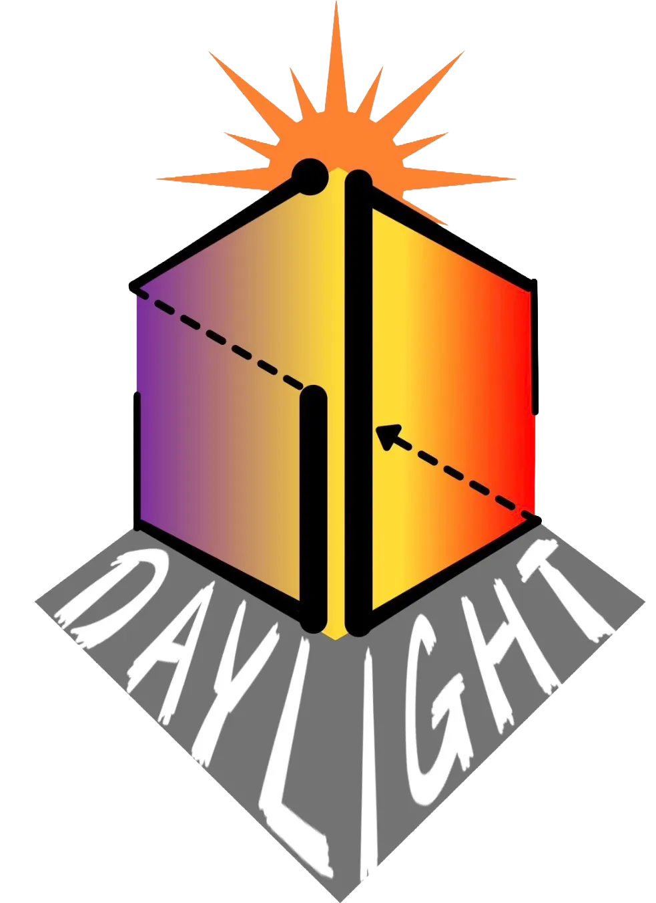

２０２６年４月２９日（水・祝）
久留米大学附設中学校・高等学校
福岡県久留米市野中町２０−２
今年の文化祭テーマは「Daylight」です。昨年は「Re:birth」をテーマに、先輩方が素晴らしい文化祭を築き上げられました。それを引き継ぐとともに、私たちの学年を象徴するものとして、このロゴには「生まれ変わった後の、新しい附設の幕開け」という願いを込めました。
デザインの核となるのは、低い視点から見上げた、日の光を浴びる「立方体」の造形です。合わせて、物事の変わり目の象徴である、明け方の夜空のグラデーションを用いています。
また、ロゴを構成する「5→6」という数字は、前後半の変わり目であり、これは偶然にも、昨年迎えた創立75周年という、100周年への後半50年の折り返し地点であることとも重なります。伝統を再解釈する学年として、昨年のロゴから着想を得た、矢印のモチーフを用いて、再出発点とも言える今年の文化祭の立場を表現しました。

2026年4月、Daylight 本サイト公開。
最高の光を準備して、お待ちしております。